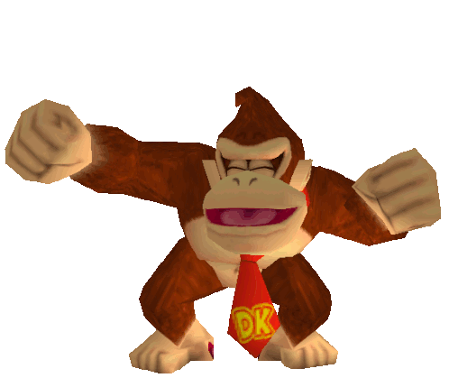
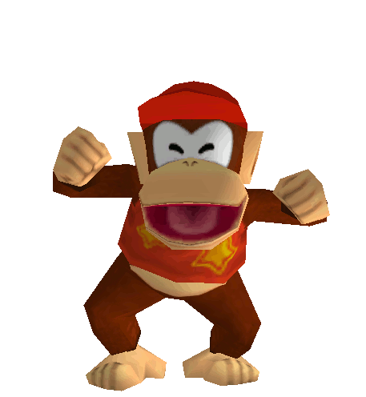

Welkom bij Monkey Business: Over Mij

Ik ben Jaylen Koesal en ik ben 17 jaar oud.
Ik woon thuis met mijn moeder en mijn zusje.
Ik volg nu de opleiding Software Development op niveau 4 aan het Techniek College Zuidplein.
Ik heb voor deze opleiding gekozen omdat ik het leuk vind om met code te werken en dingen te creëren die werken.

Ik heb in het verleden wat met computers gewerkt,
zoals het aanpassen van pc's en surfen op internet, maar ik vond dat niet zo leuk.
Toen ben ik verder gaan kijken en ontdekte ik het vakgebied van softwareontwikkeling.
Nu volg ik deze opleiding en ben ik erg enthousiast over mijn keuze.

In de toekomst wil ik een bedrijf oprichten dat zich richt op het ontwikkelen van games.
Ik overweeg om verder te studeren op het mbo om dit doel te bereiken.
Mijn droom is om de wereld rond te reizen, want ik geniet ervan om andere landen te bezoeken.